Profile and optimize agentic AI on Windows
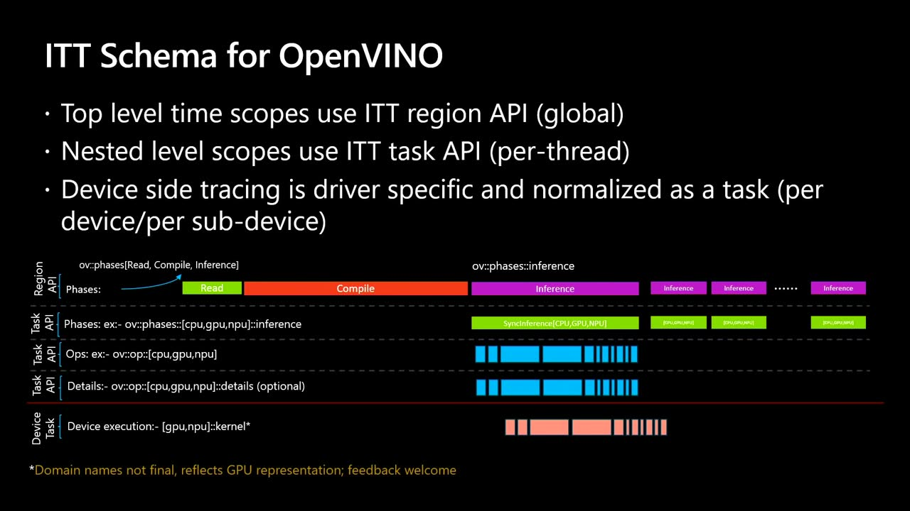
Chapters
Official description
Learn how to profile and optimize agentic AI apps on Intel-powered Windows PCs. In this live demo, analyze performance across CPU, GPU, and NPU to identify bottlenecks and improve responsiveness and power efficiency. See how to build performance profiles and apply tuning techniques using Intel Tracing Technology, OpenVINO, and Windows ML. Seating for this session is first-come, first-served. Add it to your schedule to plan your day and arrive early to secure a spot.
Summary
Overview
A live, advanced-level demo from Intel engineers on profiling and optimizing agentic AI workflows running locally on Intel-powered Windows PCs. The session demonstrates how correlated hardware and software telemetry exposes bottlenecks across CPU, GPU, and NPU, and how simple offloading and model-tuning decisions improve responsiveness and power efficiency on AI PCs.
Key announcements
- First preview of Intel Unified Telemetry (starting this week) — A framework that decouples telemetry collection from the tool chain and merges driver-level platform data (CPU, GPU, NPU, power) with software traces into a single time-synchronized output.
- Time-correlated platform telemetry across IP blocks (~00:05:13
 m05s
m05s m10s
m10s p05s
p05s p10s) — Data from multiple drivers operating in different time domains is unified into one time domain, removing the burden of manual correlation previously required of tooling.
p10s) — Data from multiple drivers operating in different time domains is unified into one time domain, removing the burden of manual correlation previously required of tooling. - OpenVINO runtime fully instrumented for tracing (~00:14:14m05s
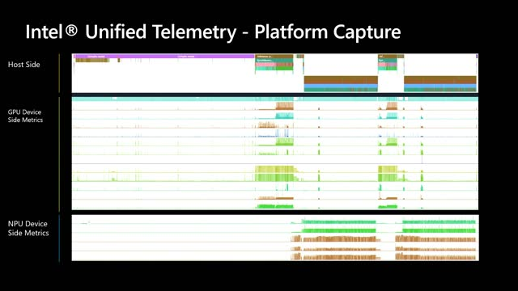
m10s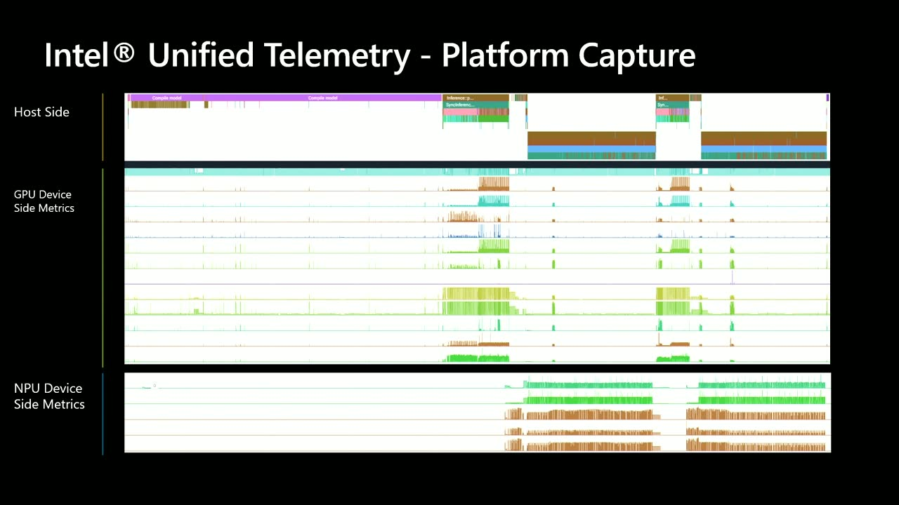
p05s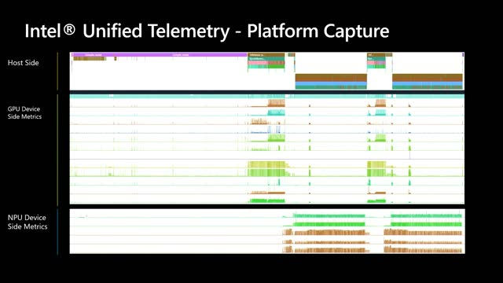
p10s) — The OpenVINO runtime is fully instrumented with ITT markers, with additional layers such as Windows ML being added on top. - JSON-based, AI-queryable trace output (~00:12:07m05sm10s
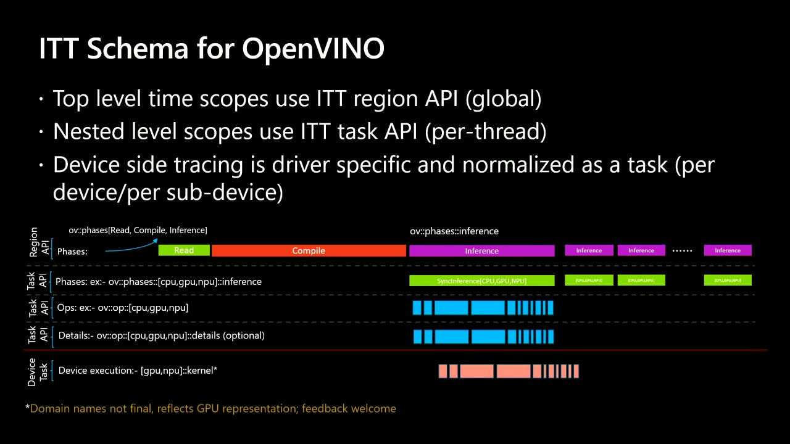
p05s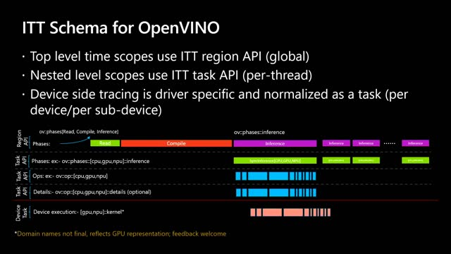
p10s) — Software traces are organized into structured domains (for example "OV phases") so AI models can be queried to generate breakdowns and reports.
{kind=link}
{kind=link}
{kind=link}
{kind=link}
{kind=link}
{kind=link}
{kind=link}
{kind=link}
Topics covered
- Why iteration speed on local prompts determines productivity on AI PCs.
- Anatomy of an agentic workflow: reasoning, planning, tool calling, and conversation summarization.
- Two telemetry streams: structured low-overhead platform metrics versus unstructured higher-overhead application/middleware traces.
- Correlating physical hardware performance with software execution layers across different time domains.
- Offloading the stylizer and summarization models from GPU to NPU to overlap work and shorten user-perceived turn time.
- Instrumenting custom applications with the ITT API (C and Python) using domains and tasks (for example "session creation" and "inference").
- Reading trace files: model compilation time, inference kernels, time-to-first-token, and decode rate.
- Comparative profiling across data types (FP16, INT8) and devices (GPU vs NPU) to weigh latency against energy efficiency.
Notable quotes
"You cannot optimize what you cannot see." — Vasanth Tovinkere
"The productivity is really going to be measured based on the iterations that you can do with your prompts." — Freddy Chiu
"If you are looking at speed that is more important for your application, then consider the GPU. If you want more energy efficiency... then the NPU is better." — Freddy Chiu
Products and tools mentioned
- Intel Unified Telemetry framework
- Intel Instrumentation and Tracing Technology (ITT) API
- OpenVINO and OpenVINO GenAI
- Windows ML
- Windows ML CLI
- ONNX [inferred]
- oneDNN [inferred]
- ETW (Event Tracing for Windows)
- OpenSCAD [inferred]
- LCM Dreamshaper diffuser model [inferred]
- Qwen 3 models [inferred]
- ConvNeXt V2 [inferred]
- YOLOv11 [inferred]
- Intel Core Ultra Series 3 [inferred]
Speakers featured
- Freddy Chiu — AI Frameworks Engineer, Intel
- Vasanth Tovinkere — Principal Engineer, Intel
Frames
{kind=link}
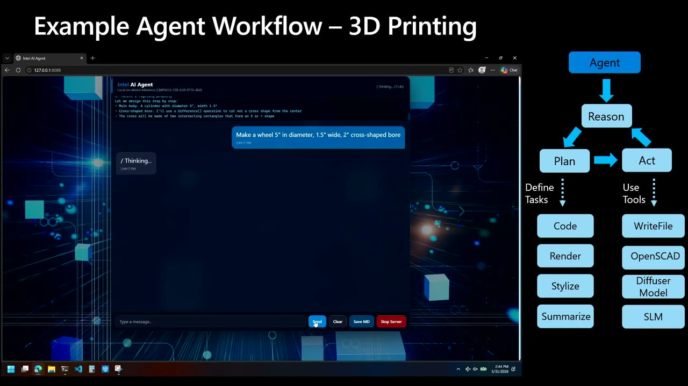
{kind=link}
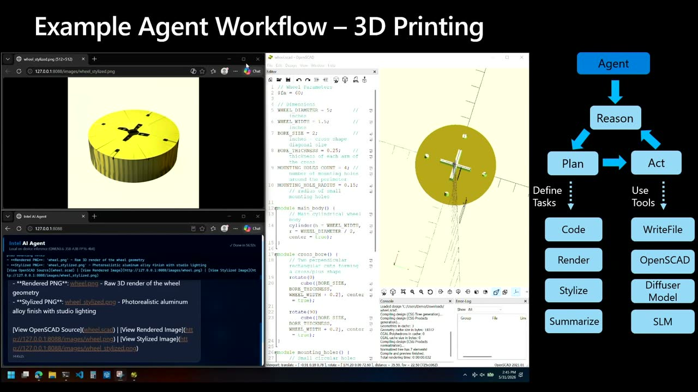
{kind=link}
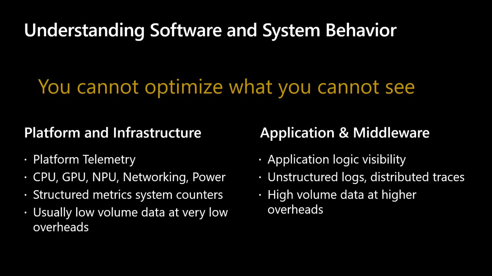
{kind=link}
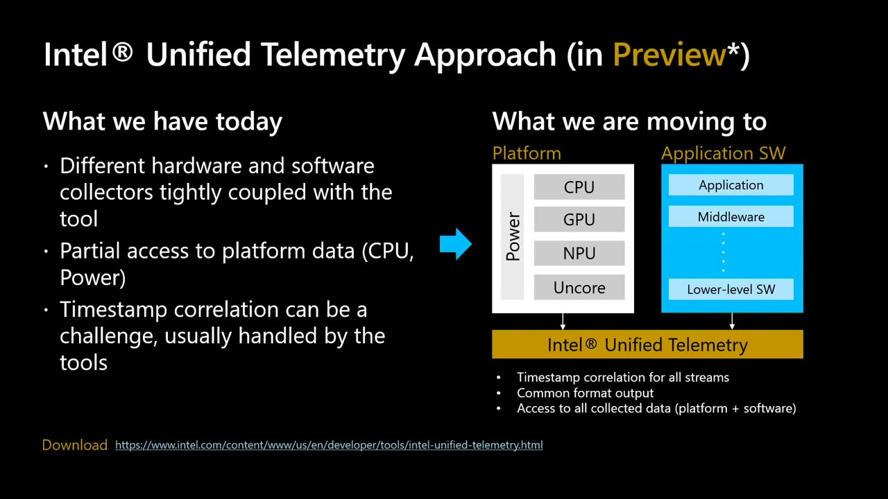
{kind=link}
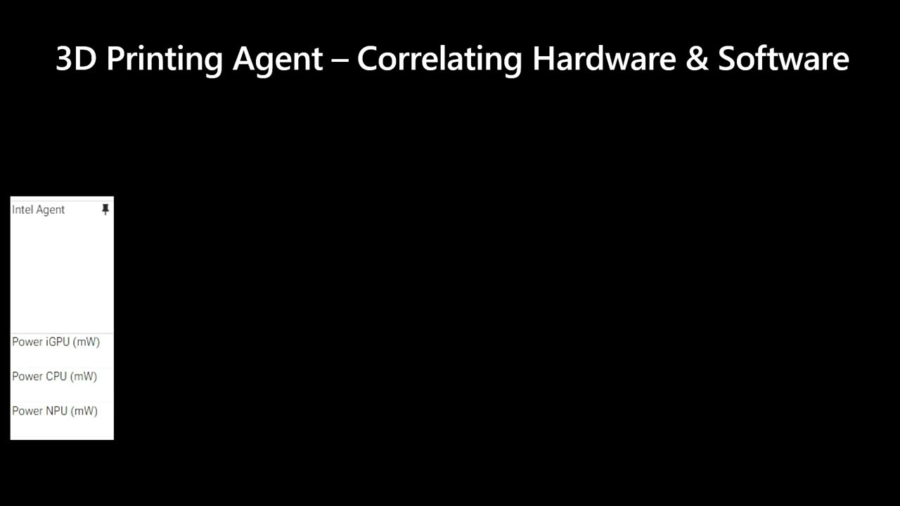
{kind=link}
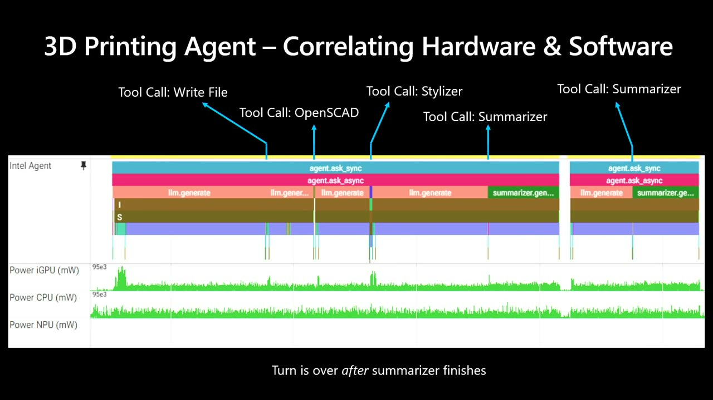
{kind=link}
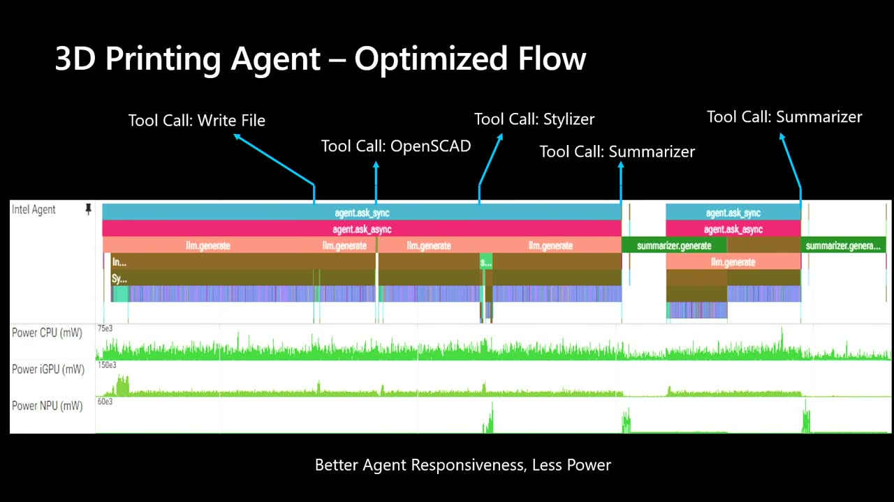
{kind=link}
{kind=link}
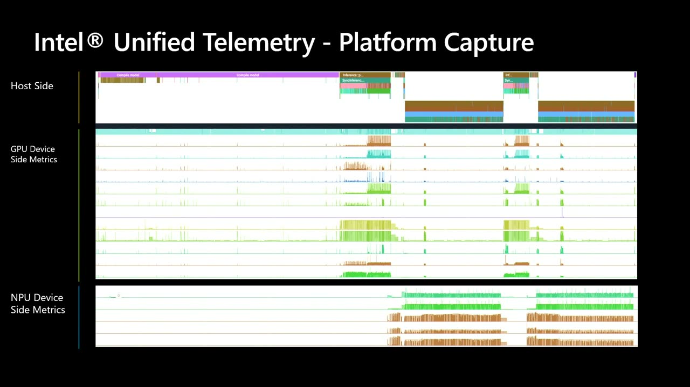
{kind=link}
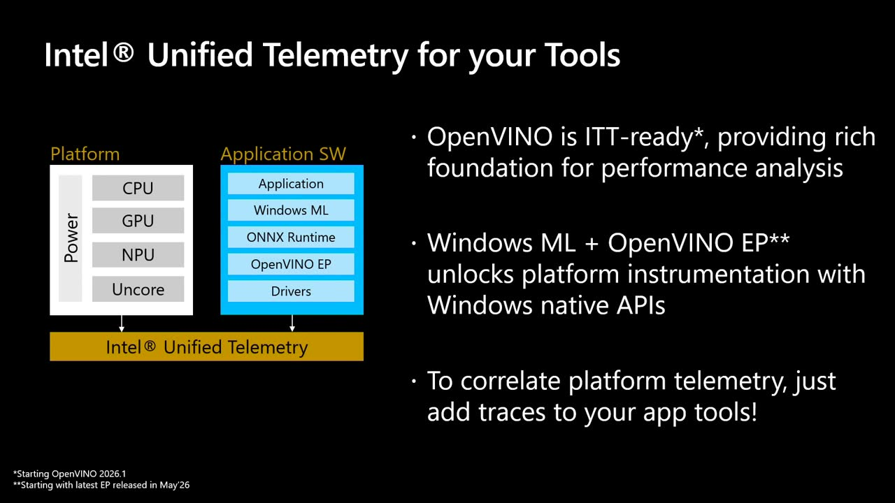
{kind=link}
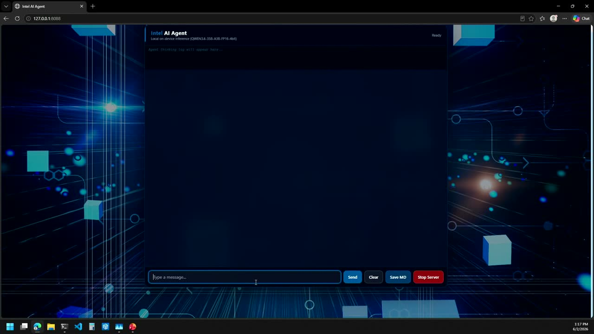
{kind=link}
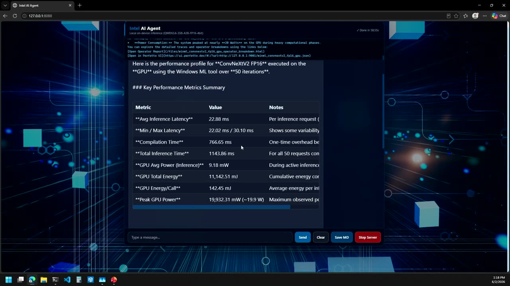
{kind=link}
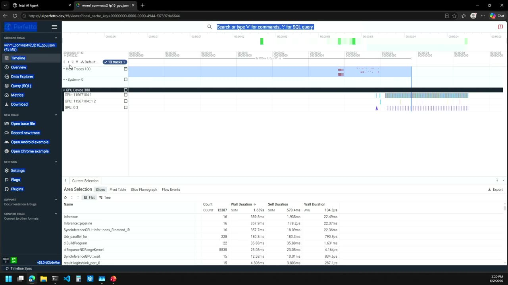
{kind=link}
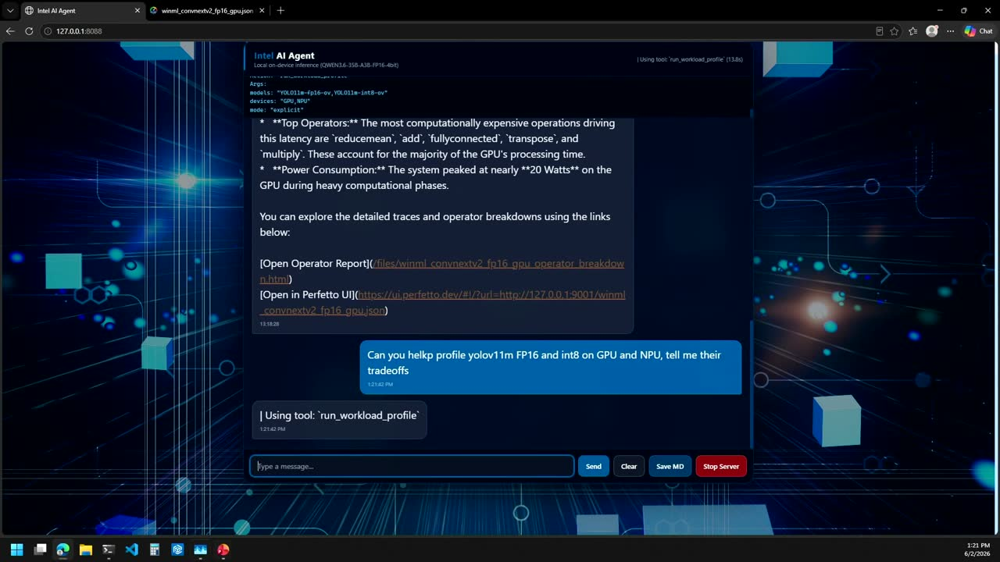
{kind=link}
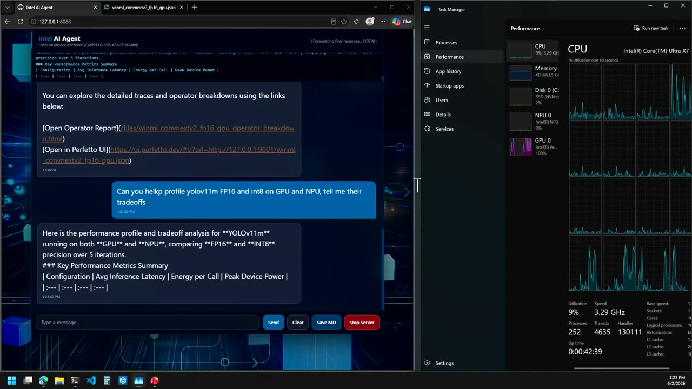
References
Transcript
Show / hide transcript (31,077 chars)
[00:00:00] All right, good afternoon, everybody. [00:00:04] My name is Freddy Chu. [00:00:05] I'm an AI frameworks engineer at Intel. [00:00:08] This is Vasant Tobinkere is an Intel Principal engineer, and [00:00:12] we're here today to talk about profiling your agentic AI [00:00:16] on Windows. [00:00:17] So the agenda today is going to be why profiling [00:00:20] agentic AI workflows it's important. [00:00:23] Then we're going to go and profile a simple agentic [00:00:26] workflow. [00:00:27] And as I think think work flows go, they use [00:00:30] a lot of AI tools. [00:00:31] So we're going to look at profiling AI tools, we're [00:00:34] going to do a demo and then we're going to [00:00:36] wrap it up, summarize and go Q&A. [00:00:39] So why is it important? [00:00:41] You know, we're in a very interesting inflection point where [00:00:45] some of these very powerful models are running on AI [00:00:48] PCs. [00:00:49] So foreign factors like this ones, laptops, there's a lot [00:00:52] of power now that you can do, you know, with [00:00:54] AI PCs. [00:00:55] So the productivity is really going to be measured based [00:00:58] on the iterations that you can do with your prompts. [00:01:01] Because as we all know, getting the right prompts is [00:01:03] the key to getting the right outputs. [00:01:05] But when you're running these things locally, the key and [00:01:09] the function of success is going to be how many [00:01:11] iterations of these prompts can you do on the system [00:01:14] and how fast can you do them? [00:01:16] And that's why it's important to optimize your workflows. [00:01:20] So let me show you here a simple agentic workflow. [00:01:24] And what this thing is doing is I asked it [00:01:27] to do a 3D model for a wheel. [00:01:29] It has specific, you know, sizes like 5 inch in [00:01:33] diameter, 2 inches wide and you know, a a bore [00:01:36] in the middle. [00:01:38] And So what this thing is doing is it's running [00:01:41] locally on an AIPC is powered by open Veno and [00:01:43] Open Veno Gen. [00:01:44] AI and the latest Pental a generation and it's running [00:01:48] a Quint 3.6 model, 35 billion parameters. [00:01:51] And as this is reasoning is creating a plan for [00:01:54] execution. [00:01:55] It's creating code. [00:01:56] And as part of the tool calling, it's going to [00:01:59] use Openscat to render that code into a 3D model [00:02:02] that you can then take to a 3D printer. [00:02:05] Now after that, the agent is going to create a [00:02:07] stylized version of that image so that you can get [00:02:10] a photorealistic version of what it could look like. [00:02:13] And finally, once the prompt turn is towards the end, [00:02:16] it creates a summary of the conversation so that as [00:02:19] you continue to interact with the agent, it will have [00:02:23] the ability to remember the conversations. [00:02:26] Now this is a very typical pattern of agents. [00:02:30] You know, it reasons about your request, it creates a [00:02:33] plan for executing to the request that you ask it [00:02:36] to. [00:02:37] And then as part of that plan execution, it carries [00:02:40] out a set of tasks. [00:02:41] And this task, increasingly, they are becoming more and more [00:02:45] complex and more elaborate. [00:02:47] Some of these tasks may call tools as simple as [00:02:49] write file. [00:02:50] Some others may be as complex as embedded several models [00:02:53] that are chained as part of the tool. [00:02:55] And so now that we know, you know, what agent [00:02:58] apps do and how to, you know, look at their [00:03:01] workflows, how do we now start profiling them so that [00:03:04] we can actually optimize them? [00:03:06] So I'm going to pass it on to my colleague. [00:03:10] Hi, can you guys hear me? [00:03:14] So this next section is more about how to get [00:03:17] the necessary data for you guys to make the decisions [00:03:21] that you have to make. [00:03:23] And typically what happens is for you to understand the [00:03:27] software and the system behavior, you need to be able [00:03:30] to get the right kind of telemetry from the right [00:03:32] places. [00:03:34] You cannot optimize what you cannot see. [00:03:36] So basically there are two streams of data. [00:03:39] You have the platform and infrastructure based telemetry that is [00:03:44] specifically coming from all the various IP blocks on the [00:03:50] system, CPUGPUNPU, power, networking, Encore and so on. [00:03:55] This kind of data is very structured and you know [00:03:58] these are system metrics, these counters have been well defined. [00:04:03] So the data that you get is structured and it's [00:04:07] low volume generally and it also has very low overhead. [00:04:11] So if you want to get the platform telemetry, it's [00:04:13] less than 1% most of the time. [00:04:16] And when it, when it goes to the application and [00:04:20] middleware, this is a little bit, you know it, it [00:04:23] varies a bit. [00:04:24] It depends on how much of the code is instrumented, [00:04:27] whether it's instrumented well or not, or it's just a [00:04:31] lot of, you know, data that's coming out of it. [00:04:34] This data is primarily unstructured, it's higher volume and has [00:04:38] higher overhead, right. [00:04:40] So how do you combine the two and try to [00:04:42] make sense of it? [00:04:46] When you're getting these kinds of data, you need to [00:04:49] bridge the physical hardware performance with the software layers that [00:04:53] are executing at a higher level. [00:04:56] So you have to correlate. [00:04:57] The correlation part is a key. [00:05:00] And when you look at it, the platform infrastructure is [00:05:03] coming from multiple drivers. [00:05:06] The drivers are operating in different time domains many times. [00:05:10] So what we have in this particular demo as we [00:05:13] are using, we have something called a unified telemetry that [00:05:17] puts them in the same time domain. [00:05:20] It's all time correlated. [00:05:21] You get the data from the CPUGPUNPU and power. [00:05:26] And if you want to get some OS specific stuff [00:05:28] you can incorporate ETW as well. [00:05:31] From the application side, we are going to incorporate the [00:05:36] tracing through ITT or Intel Tracing instrumentation and tracing technology. [00:05:43] This is an open source project that's been around for [00:05:46] a long time and a lot of the Intel stack [00:05:48] has been instrumented with this, right? [00:05:51] You know, your Open window stack 1, DNN and other [00:05:53] things that are a part of the AI stack have [00:05:55] all been instrumented with this. [00:05:59] And over time we're going to be enabling more and [00:06:01] more layers. [00:06:02] So this is where we're getting some of the software [00:06:05] telemetry in addition to whatever has already been instrumented and [00:06:10] that is the capability that unified telemetry is going to [00:06:15] provide. [00:06:17] So how is it different from what we have today, [00:06:19] Right. [00:06:19] So unified telemetry is in previous starting this week, but [00:06:23] previous to this week, what was different? [00:06:26] We would get data from different drivers at different rates [00:06:30] with in different time domains. [00:06:32] And it was the responsibility of a tool chain or [00:06:35] a tool to put them in the same time domain. [00:06:37] And that was always a complex problem. [00:06:39] So if you wanted to do it yourself problem, right, [00:06:42] because you had to rely on a tool. [00:06:44] So it was tightly coupled with the tool. [00:06:46] So we are decoupling it. [00:06:48] So you get the data from the the the platform [00:06:52] and it's time correlated. [00:06:58] And for the software introspection, you know, there are multiple [00:07:02] ways to get the data you want. [00:07:04] When an important event happens, you can walk the call [00:07:07] stack, figure out who's executing, or you can instrument the [00:07:11] relevant portions that are important so that you can correlate [00:07:15] the platform telemetry with what's important that's happening in your [00:07:19] stack. [00:07:20] And that way you can get the right visibility. [00:07:23] So in order to do that, you know this relies [00:07:27] on the ITT API which has a C API, AC [00:07:30] API and a Python API and so on. [00:07:32] But that's an open source project where which is used [00:07:35] in majority of the Intel stack. [00:07:40] So, yeah, so based on the information that we just [00:07:43] learned from us, and let's take this into practice. [00:07:47] The example that we showed earlier with the 3D printing, [00:07:50] you know, agent, if we were to instrument it, let's [00:07:52] look at, you know, what we're doing. [00:07:54] First thing we asked it to create, you know, the [00:07:56] wheel. [00:07:57] So the agent is processing the request and it's generating [00:08:01] the code. [00:08:02] The first tool call is going to be writing the [00:08:04] file. [00:08:05] So the code that it generated writes it into a [00:08:07] file. [00:08:08] And then after that it's calling a stylizer. [00:08:11] So after the, you know, code is created, it rendered, [00:08:14] it passes it through a stylizer. [00:08:16] In this case, it's running an LCM Dream shaper diffuser [00:08:20] model and everything so far. [00:08:21] If you notice the lower line that is indicating the [00:08:24] power usage, everything is running on the GPU. [00:08:26] So we'll talk more about, you know, how to fix [00:08:29] this. [00:08:29] But right now, everything is running on the GPU. [00:08:32] And so as the stylizer is running, that generation, that [00:08:37] orange bar that you see took a pause, right? [00:08:40] Because it's computing the stylizer. [00:08:43] And then after that, once it's done, it'll go back [00:08:46] and, you know, create a response to respond to the [00:08:48] chat. [00:08:49] And what you're seeing now is that we're about to [00:08:52] finish and this summarization part of the prompt kicks in. [00:08:56] So now it switches the model to run a quint [00:08:59] three 8 billion, and it's also running on the GPU. [00:09:03] And so from the user point of view, you enter [00:09:05] the chat prompt and then now you're waiting for, you [00:09:08] know, the agent to finish before you can start the [00:09:10] next prompt. [00:09:12] And so now you see that little gap right in [00:09:14] the middle where as I type, you know, the next [00:09:16] prompt, that's when you process again and then you know, [00:09:19] summarize and so on and so forth. [00:09:22] So understanding how you know, hardware and software is behaving [00:09:25] at a system level is super important because as we [00:09:28] start looking into possible optimizations, let's apply some simple tweaks [00:09:33] and see how we can change this. [00:09:36] So now you know, a simple set of optimizations that [00:09:38] we can do. [00:09:40] The first thing you know, everything stays the same. [00:09:42] We ask for the prompt, the file gets created and [00:09:44] the tool gets called for rendering. [00:09:47] Now for the stylizer. [00:09:50] Now instead of running that on the GPU, we're delegating [00:09:53] that to the MPU. [00:09:55] So now you see the spike in power usage at [00:09:57] the bottom because the MPU is activated. [00:10:00] So that's one benefit. [00:10:01] But the other benefit is that the agent, the orange [00:10:04] line that you see towards the top, now, it continues [00:10:06] to generate because as soon as it delegated that offload [00:10:09] to the MPU, now it's creating the response to get [00:10:12] back to the chat. [00:10:14] So the next phase is a summarization. [00:10:16] As the turn essentially completes, the agent kicks off the [00:10:19] summarization of the conversation and that is done in the [00:10:22] background by the MPU. [00:10:24] And right at that point, the agent is ready to [00:10:27] process the next prompt. [00:10:28] And so the end effect is that we can shorten [00:10:31] the time from a user experience point of view and [00:10:34] the agent is able to respond quicker while the same [00:10:37] time because the MPU is designed for low power and [00:10:40] high efficiency processing of AI while these things are happening [00:10:44] in the background, overall you get the same effect, you [00:10:47] know, faster turn around and also lower power. [00:10:50] So when you're working on a laptop like this, this [00:10:53] translates to, you know, higher number of turns that you [00:10:56] can do, you know, before the battery runs out and [00:10:59] just faster experiences. [00:11:01] So, you know, we talked about the tuning that we [00:11:05] can do at a system level and how this impact [00:11:08] your agent flows. [00:11:10] Now let's look at, you know, the tool calling because [00:11:13] a lot of the tools that agents are starting to [00:11:16] use are more and more complex. [00:11:18] So, you know, invoking a a billion parameter model, diffuser [00:11:22] model, and they can get more and more complex. [00:11:24] And increasingly these tools, it really boils down to the [00:11:27] end profiling the inferences because it's going to be a [00:11:29] series of pipelines probably in your application, the tools. [00:11:33] And so let's look at what we can do for [00:11:35] optimizing the tools. [00:11:37] And so for that, let's dive deeper into tracing and [00:11:40] Vasant. [00:11:44] So, you know, we talked about the two different telemetries. [00:11:49] So when you're, when you're tracing software, I said it's [00:11:52] generally unstructured, right? [00:11:55] How do you bring some structure to the software traces, [00:11:58] right? [00:11:58] If you can bring some structure, you can then run [00:12:02] your AI models on it to get the necessary, you [00:12:05] know, analysis done for you. [00:12:07] So in this case, open, this is how open Veeno [00:12:10] has been structured. [00:12:11] So there are different layers of the software. [00:12:14] The top level layer is where the phases of open [00:12:17] Veeno execution happens and they're generally under the OV phases [00:12:22] domain name. [00:12:23] So when you're doing a query, even in Jason, if [00:12:26] you can ask like any of the AI models, say, [00:12:29] look at the domain OV phases and then give me [00:12:32] a report and it can give you the breakdown of [00:12:34] the top level. [00:12:35] And then you can go deeper and deeper with it, [00:12:37] right? [00:12:37] So, so the idea is organising the software traces in [00:12:41] some fashion so it becomes friendly for AI and for [00:12:44] queries in the future. [00:12:47] So if you look at a sample, this is the [00:12:49] data from, you know, one of the model execution. [00:12:53] This is what it'll translate to from a software traces [00:12:57] perspective with open, we know using the unified telemetry, the [00:13:02] top part is the, the NP, the GPU execution. [00:13:07] And you're seeing the same kind of behaviour where there's [00:13:10] an inference I've, I've taken an inference snapshot and the [00:13:14] bottom portion is an inference on the NPU, right? [00:13:17] So you'll see the data is very different. [00:13:20] The GPU is less chatty, NPU is a lot, lot [00:13:22] more populated because it has different units that are all [00:13:26] pipelined together. [00:13:27] And, and so this is the kind of data you're [00:13:30] going to get. [00:13:32] You're looking at the top level analysis to figure out [00:13:35] how efficient your queries were. [00:13:38] You know how efficient your inferences were. [00:13:40] You know time to 1st token and then decoding rate [00:13:43] and so on easily can be computed from the top [00:13:46] level query. [00:13:47] But if you want to get to the operator level [00:13:49] specifics or the layer level level, layer level specifics, you'll [00:13:53] have to go into the the next level of detail. [00:13:59] Then how does it tie with the platform telemetry, right. [00:14:01] So this is how, this is the kind of platform [00:14:04] telemetry you're going to get. [00:14:06] This is basically displaying about a 10th of what you [00:14:09] get. [00:14:10] You get a lot of platform telemetry. [00:14:11] You get the memory reads, memory writes to DRAM, IP [00:14:15] block to IP block, you know, bandwidth, you'll get power, [00:14:19] you will get the utilisation and so on. [00:14:21] So you can correlate your AI model execution with any [00:14:25] of these metrics to figure out how you would want [00:14:28] want to optimize it. [00:14:34] So, so from from that perspective, you know, unified telemetry [00:14:39] gives you a mechanism to get data from both. [00:14:43] Of course, when I say data from the software side, [00:14:46] it's still based on the ITT tracing information and the [00:14:49] telemetry from the drivers. [00:14:52] It combines both of them into a single time domain [00:14:55] time synchronized output. [00:14:58] Currently in Jason. [00:15:00] This is the first preview of it starting this week. [00:15:03] And over time it'll probably have a database around it [00:15:06] as well, a vector, you know, a column database so [00:15:09] that queries can be more efficient. [00:15:14] And right now on the open window runtime is fully [00:15:18] instrumented and we are trying to add additional layers on [00:15:22] top. [00:15:23] And so the next section is going to look at [00:15:26] what would happen if you, you know, instrumented the Windows [00:15:31] ML layers and so on. [00:15:33] And then how do you combine the data together. [00:15:34] So that's what the next section's going to look at [00:15:40] to instrument your own software with the ITTAPI. [00:15:44] The the open source project builds a static library that [00:15:48] you can link in with your application and causes no [00:15:51] overhead until you attach a tool like unified telemetry to [00:15:55] collect the data. [00:15:57] So it's basically putting certain markers in place that are [00:16:01] there when a tool attaches for you to get the [00:16:04] data. [00:16:05] And in this case we are, you know, creating a [00:16:08] domain called Win ML samples and then creating a task [00:16:11] underneath that called session creation, which is what will show [00:16:16] up in your data. [00:16:18] So there are two different tasks that are shown here, [00:16:22] session creation and inference. [00:16:24] So this is how most of the Intel software stack [00:16:28] has been instrumented. [00:16:30] And if you want to extend it beyond the layers [00:16:32] that are currently visible, you're welcome to, you know, extend [00:16:36] it to the layers that are of interest to you. [00:16:40] So that brings us to the demo. [00:16:43] And Freddy will take over. [00:16:45] All right. [00:16:47] So what we are going to do is I have [00:16:51] an agent running, it's a 3.6 billion parameter model, it's [00:16:57] a Quinn 3.6, it is running on a Core Ultra [00:17:01] Series 3 all locally at the time. [00:17:05] And let's say that you have a tool that was [00:17:10] built with Windows ML and I am going to ask [00:17:14] it to essentially profile Windows ML tool running Conf Next [00:17:20] V2 on GPU if it's 16 for 50 iterations. [00:17:25] So what this will do is we have equipped the [00:17:29] agent to use tools to basically enable the tracing session [00:17:34] that Vasant talked to you about. [00:17:38] And it's going to profile, you know, the tool that [00:17:41] you developed that is instrumented now also with those markers [00:17:44] at the application level. [00:17:46] And it's going to correlate all the hardware events, all [00:17:50] the underlying frameworks, right? [00:17:51] The open vino events, all that stuff is going to [00:17:54] be created. [00:17:55] And then data is going to start surfacing. [00:17:57] The agent is going to process the data that comes [00:18:00] out of it. [00:18:01] And it's going to give you a summary right now. [00:18:04] The data generator is going to be super helpful to [00:18:07] start dissecting like whether this model is sufficient, whether this [00:18:11] model, you know, consumes a lot of power, will it [00:18:13] be good for your usage? [00:18:15] And depending on, you know, what you're trying to accomplish [00:18:18] with your application, there's different ways to tackle it, right? [00:18:20] And different ways to to optimise. [00:18:24] So in this case, what it did is it created [00:18:28] a summary and it's tallying the performance of the latency. [00:18:34] It is also giving you some level of variance, so [00:18:37] the maximum and it's giving you the average inference. [00:18:40] So running this model itself and this tool, you know, [00:18:44] took about, you know, 9 milliwatts and for more details, [00:18:49] right? [00:18:50] It also provides links so that you can see a [00:18:52] more detailed report of the execution of the model itself. [00:18:56] But it also, you know, interpreted this data and provided [00:18:59] you some, you know, summary like latency if you care [00:19:03] about it, right, you may have some considerations to make. [00:19:06] So let's look at the the trace file. [00:19:13] Now this is the tool and application that, you know, [00:19:16] we have already instrumented. [00:19:17] And so if you zoom in, you can now see [00:19:20] some of the Windows ML application events that we traced [00:19:23] and we added to the application. [00:19:26] So you can clearly see now there's a correlation between [00:19:29] what the app is doing and then the underlying hardware [00:19:32] execution. [00:19:33] And you'll notice that there's a bit of time that [00:19:36] is spent on model compilation. [00:19:38] And then there's all these little events over here that [00:19:41] if we zoom in, we can actually determine and see [00:19:43] what is happening. [00:19:44] And from a software stack point of view, this is [00:19:47] what Open Venus doing is handling your inference. [00:19:49] If we zoom out, you can now correlate the hardware [00:19:53] activity. [00:19:54] So let's collapse the host trace. [00:19:58] And if we look at the GPU. [00:20:02] We see that these are the corresponding hardware events and [00:20:05] these are all the different kernels that are getting executed [00:20:09] Now. [00:20:10] Why is this useful for a developer having seen this, [00:20:13] knowing that there's a capable GPU sitting on, you know, [00:20:17] on your device, one of the things that you can [00:20:20] do to optimize this is you want to get, you [00:20:22] know, to the inference part as soon as you can. [00:20:25] And so one way to, for instance, to get rid [00:20:28] of the compilation time or reduce it is to pre [00:20:32] compile your model. [00:20:33] So if you pre compile it, you can reduce significantly [00:20:35] this model compilation time that you see here. [00:20:38] And so your tool will execute faster, right? [00:20:41] So this is now very powerful. [00:20:44] And the next question might be, OK, so you optimize [00:20:48] the compilation part, but is this model the right model? [00:20:52] And if you are dealing with model optimization, you know [00:20:55] that you have a lot of choices. [00:20:57] There's different data types like FP16 int date. [00:21:01] Now we have NP us and so he's picking the [00:21:03] NPU, the right device is GPU the right device. [00:21:07] So now we can ask the agent to also do [00:21:09] this profiling across, you know, multiple workloads. [00:21:13] So let's ask it to do a comparison. [00:21:23] Let's do a tiny yoga. [00:21:38] So I'm going to ask it to profile Yolo V-11. [00:21:42] I have an MP16 version and an intake version. [00:21:45] I have an MPU and a GPU. [00:21:47] And so there's four combinations, right? [00:21:49] So the agent is reasoning in this case and conducting [00:21:53] a plan it will ultimately execute for and I will [00:21:57] bring up the task manager so that you can correlate [00:22:01] what the agent is doing at the time. [00:22:14] OK, So what you will see is that as the [00:22:17] agent creates a plan and starts the collector session and [00:22:21] the workload session to start tracing, it'll do that one [00:22:24] at a time because every time it collects traces, there's [00:22:28] a lot of data points that gets, you know, generated. [00:22:31] So it has to process some of the binary files, [00:22:34] the log files that get created, it creates a summary [00:22:37] and then it'll aggregate the combination of all those results, [00:22:40] right, and give you a summary of all the workloads [00:22:43] that we just run. [00:22:44] So you'll notice that the GPU, you know, ran for [00:22:47] a long time. [00:22:48] It was processing and doing the planning. [00:22:50] Then you'll see a short spike after that. [00:22:52] That's essentially the agent profiling the GPU scenarios for these [00:22:55] workloads. [00:22:56] You'll see a couple of tiny spikes on the MPU [00:22:59] and each one of those instances is essentially the agent [00:23:02] running that, you know, FP16 model on MPU and then [00:23:05] again running it on the MPO, but with intake. [00:23:08] And for each of these sessions, you have to start, [00:23:11] you know, and stop the session because the amount of [00:23:14] data generated is just, you know, incredibly high. [00:23:16] So once that is available, there's all this operator information [00:23:20] that gets extracted and now we can start looking at, [00:23:24] you know, their profile. [00:23:26] So let's see what the agent generated. [00:23:31] So it's compiling a table of the inference latency for [00:23:33] each of these devices and also the power used, you [00:23:36] know, for each of these devices, the energy and then [00:23:39] the peak, you know, wattage, right during those periods of [00:23:42] time. [00:23:43] And based on the results, it's also giving you real [00:23:48] time, right? [00:23:49] The recommendation like some things to consider, if you are [00:23:52] looking at speed that is more important for your application, [00:23:55] then consider the GPU. [00:23:57] If you want more energy efficiency, maybe it's a task [00:24:00] or a tool that you can do in the background, [00:24:02] then the MPU is better. [00:24:03] And so with all this information, now you can do [00:24:07] a lot of trade-offs and optimization points for your tools. [00:24:14] OK, I'm going to switch back to my slides. [00:24:21] OK, So the summary is for agentic workloads, we need [00:24:26] to profile them. [00:24:28] We need to understand what they're doing and what the [00:24:31] system is doing as a as a result of your [00:24:33] agent. [00:24:34] Then you can start analysing right where the time is [00:24:37] spent. [00:24:38] And finally you can start tuning and optimising their workflows. [00:24:42] Where can you paralyze some of these? [00:24:43] Where can you offload? [00:24:44] Where does it make sense? [00:24:46] And then you can optimise their tools, which is where [00:24:48] a lot of the time is going to be spent [00:24:49] also. [00:24:51] So the call to action is start adding traces to [00:24:54] your agentic flows. [00:24:56] And you know, using the unified telemetry, you can now, [00:24:59] you know, take this data and put it into action. [00:25:03] There's more information here about the Intel Unified Telemetry framework, [00:25:08] the ITTAPI for instrumenting your apps, Open Veno and Open [00:25:12] Veno Gen. [00:25:13] AI, and then Windows ML, which underneath uses open Veno [00:25:16] for powerful inferences. [00:25:18] And last but not least, you know Windows MLCLI, which [00:25:20] gives you the capability to do operator profiling, Onyx operator [00:25:24] compatibility. [00:25:26] And we'll be on later on tonight. [00:25:29] We're hosting a party, so please join us. [00:25:31] It's going to be at the SF Brewery at 7:00. [00:25:35] So looking forward to see you all. [00:25:38] Thank you you. [00:25:40] Guys have more questions. [00:25:44] If you guys have more questions, you know we are [00:25:46] at the demo booth and we probably have the same [00:25:49] demos now we have access to Unified Telemetries. [00:25:51] If you want more about it, you can come and [00:25:53] check it out.